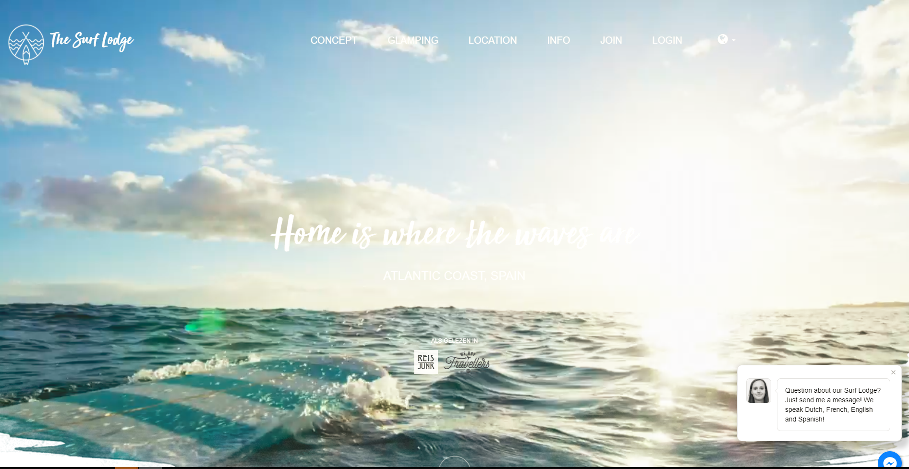
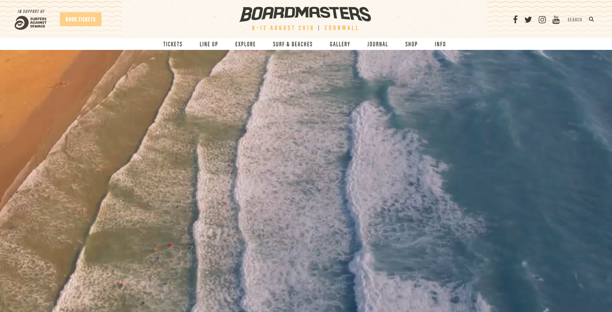
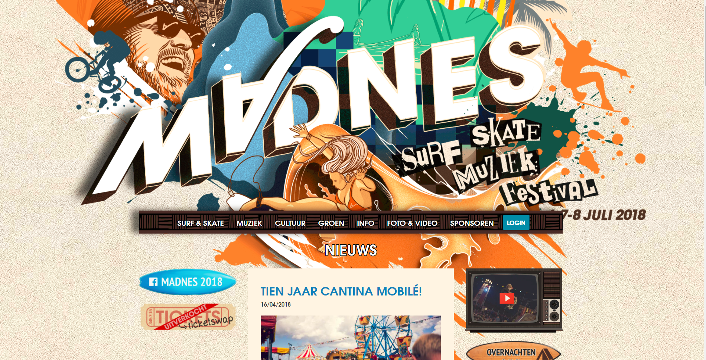

CONCURRENTIEANALYSE
THE SURF LODGE
POSITIEF

- Aantrekkelijke site omdat hij rust uitstraalt en toch iets speels in zich heeft. Dit laatste komt door de manier waarop de foto’s weergegeven worden en het kleurgebruik.
Zachte rustgevende zomerse tinten: beige, lichtblauw, wit
- Homepage start met video:heel leuk want geeft meteen sfeer weer
- Duidelijke navigatiebalk: de naam op de knoppen verklaart duidelijk wat je er gaat vinden
- Verschillende talen
- Onepage site: handig indien je ooit iets las en het terug wilt zoeken want dan moet je gewoon scrollen tot je het weer tegenkomt
- Rijk aan video- en fotomateriaal
- Chatvenster in vier talen
- Verschillende soorten glamping uitgelegd
- Concept duidelijk uitgelegd
NEGATIEF
Geen écht duidelijke prijstabel (prijzen vanaf, extra’s,.. )
Prijs voor half-pension (eten), pas te vinden na doorklikken
Prijs voor elektriciteit in tipi, pas te zien wanneer je doorklikt
Wat als je je eigen surfmateriaal meewilt?
Hoeveel bagage?
Wat is er in de omgeving te doen?
Is er parking als je zelf met de auto komt?
Kan je je eigen tent meenemen?
Geen duidelijke uitleg over de extra activiteiten
Betaalmogelijkheden?
BOARDMASTERS
POSITIEF

- enorm aantrekkelijke eerste blik door het videobeeld dat meteen verschijnt, het kleurgebruik (beige, oranje, zeeblauw). Dit het geeft de sfeer van het festival meteen weer
- Duidelijke navigatiebalk: de naam op de knoppen verklaart duidelijk wat je er gaat vinden
- Snelkoppeling rechts boven naar social media:handig en leuk
- youtube met interviews over goede surfers, aftermovies etc etc
- instagram die goed verzorgd is
- facebook
- twitter
- Snelkoppeling links boven om tickets te kopen
- Snelkoppeling rechts boven voor “surfers against sewage”
- Balk onderaan om in te schrijven voor newsletter
- Rijk aan video- en fotomateriaal
- Pagina waar je info over alles wat je kan bedenken verkrijgt
- Duidelijke prijstabel: mooie oplijsting van elke optie en de prijs
- Veel camping opties die bovendien ook een extra uitleg krijgen
- general camping
- family camping
- glamping
- vip-tents
- campervans
- camplight
- navigatiebalk beschikt over ‘journal’
- een pagina vol artikels genre ‘9 reasons why you should join Boardmasters’
- artikels over de van-life adventures
- 9 hidden gems of the camp
- Line-up
- Workouts
- Behind the lens
- ….
NEGATIEF
- een duidelijke prijstabel maar om de exacte prijs te kennen moet je het zelf optellen of een account aanmaken
- Site heeft zodanig veel opties dat het moeilijk is de pure essentie te vatten, je verdrinkt een beetje in de veelheid
- Betalende verhuur boards ?
Prijs surflessen niet snel te vinden
Wat is toegelaten op camping, wat niet?
- 1 taal: engels
MADNES FESTIVAL
POSITIEF

- Duidelijke navigatiebalk: you get what you read
- Duidelijke oplijsting artiesten line-up, mooi overzicht
- snelkoppeling naar facebook
- snelkoppeling naar de ticketverkoop (handig!)
- snelkoppeling naar Youtube
NEGATIEF
- 1 taal: Nederlands
- Line-up niet beschikbaar per dag. Je moet op de artiest klikken om te kunnen zien welke dag hij optreedt: mega vervelend als je maar 1 dag wilt gaan en zelf alles moet uitzoeken
- Wat is toegelaten op camping wat niet?
- Bij ‘cultuur’ vindt je de activiteiten terug. Vreemd
- Verouderde site (of zo oogt hij toch)
- Geen organische site: alles staat wat door elkaar, je moet het zelf zoeken
- Geen duidelijke ticket-prijs. Enkel een vermelding van hoeveel een combi-ticket kost.
- homepage ‘achtergrond’ is vuil roos, niet meteen een kleur die je aan een surf en skate festival koppelt.